Overview
Version 1 of the platform was a Spring Boot microservice system built for the EC7204 cloud computing module: five Spring Boot applications, RabbitMQ, Redis, PostgreSQL, Prometheus and Grafana, deployed to Azure Container Apps. Its patterns were sound. It had a gateway with circuit breakers, a database per service and a transactional outbox. The business logic and security, though, had gaps that a live demo would expose quickly.
Version 2 keeps that shape and rebuilds the substance in TypeScript. It has an API gateway, user, auction, bid and notification services, with a wallet service as stretch scope. A React single-page app receives live updates, and the deployment costs nothing to run. This case study covers the review, the architecture, the three hardest problems (concurrent bids, auctions driven by time, and reliable events), and how the system is shipped.
- 26issues found reviewing v1, 6 of them high severity
- 1command from a fresh clone to a seeded, working demo
- ≈1.1 GBmemory budget for the core stack
- US$0to run locally or on the AWS free tier
Reviewing v1
Before designing anything new, I reviewed every branch of v1 and recorded what was actually built, what worked and what was broken, with a file and line reference for each finding. The diagram below shows the v1 containers with each finding placed on the part of the system it affects.
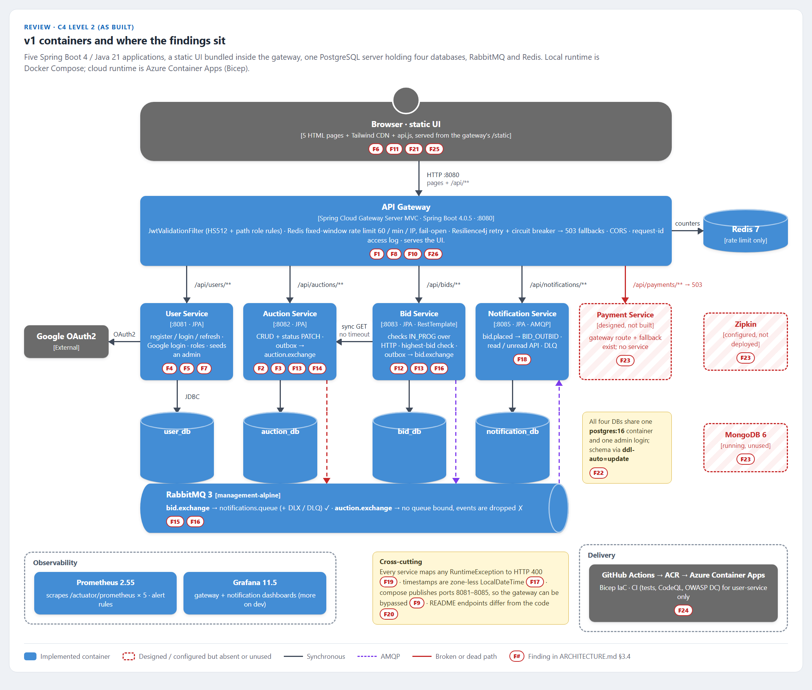
The most serious findings were:
- Authorisation holes. The gateway protected
/api/auctions/create/**, but the real endpoint wasPOST /api/auctions, so any logged-in user could create auctions. Any user could also start or close any auction, and the seller id was read from the request body. - No auction lifecycle. Nothing started or ended auctions at their scheduled times, and no winner was ever chosen. A "Start" button in the UI did the job by hand.
- A race condition. The highest-bid check and the insert were not serialised, so two concurrent bids could both be accepted, including equal or lower amounts.
- Hardcoded admin credentials were committed to the source code.
Below those sat a long tail: tokens in OAuth redirect URLs, stored XSS through innerHTML,
users silently logged out after 15 minutes because the UI never refreshed its session, polling everywhere,
and a schema managed by ddl-auto: update with no migrations. The v1 design diagrams also
described lots, payments and settlement that were never built. v2 treats those diagrams as requirements.
Constraints for the rebuild
- Stack: NestJS, React, pnpm and Docker; Kubernetes only where it adds value; AWS for the cloud.
- No recurring cost: no EKS, load balancer, NAT gateway, managed broker or managed cache, because all of them are billed by the hour.
- Small footprint: the whole stack must run on an 8 GB laptop and on a 2 GiB AWS t4g.small.
- Portable: Windows (WSL2), macOS on Apple Silicon and Intel, and Linux.
Architecture
Bidders, sellers and administrators all use one web app. Google sign-in, e-mail delivery and a payment provider are optional integrations that switch off when they are not configured, so a laptop demo needs no external accounts.
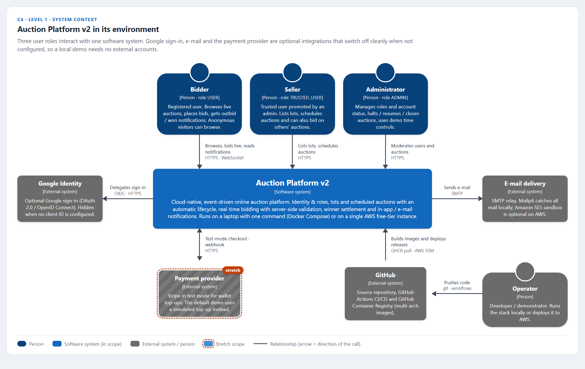
The design follows a short list of principles:
- Right-sized microservices split along the v1 bounded contexts, with one database and one database role per service.
- Synchronous calls only where an answer is needed now (gateway proxying, bid validation, wallet capture). Everything else goes through events.
- At-least-once and idempotent everywhere: an outbox on the producer, an inbox on the consumer, idempotency keys on commands.
- One write path per aggregate. Every change to an auction goes through one service and its state machine, whether it comes from HTTP, a timer or an event.
- Secure by default: a deny-by-default route table, identity only from verified tokens, and no secrets in images.
- The same artefacts everywhere: the same images and configuration model in Compose, Kubernetes and AWS.
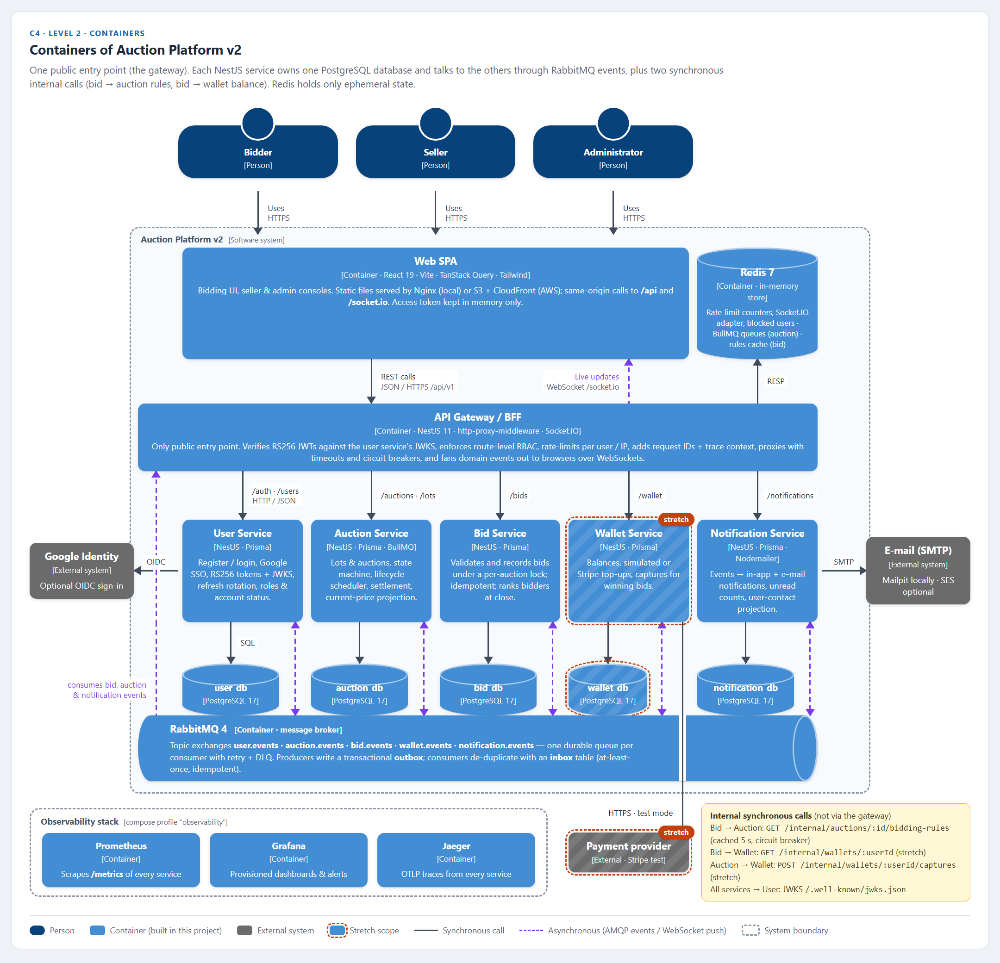
Why TypeScript
Moving from Java to TypeScript was partly about using one language end to end, but mostly about memory. A
Node service uses roughly 80–150 MB, against 300–500 MB for each Spring Boot service, and that difference
decides whether six services plus infrastructure fit on a 2 GiB instance. A pnpm and Turborepo monorepo
holds every app, and a shared contracts package of zod schemas validates API input, types the
SPA and defines every event payload from one source.
Inside the services
Each component maps directly to a NestJS module, so the component diagrams double as the module plan. Inside a service, dependencies point one way: controllers and consumers call application services, which call a pure domain layer that imports nothing from Nest or Prisma. Lint rules enforce those boundaries.
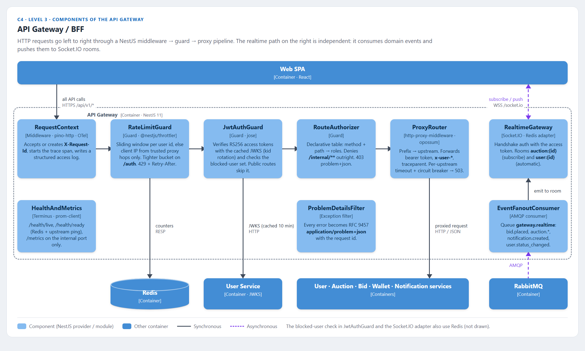
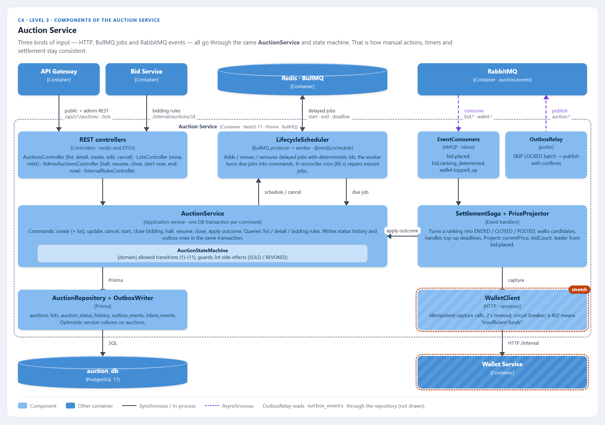
AuctionService.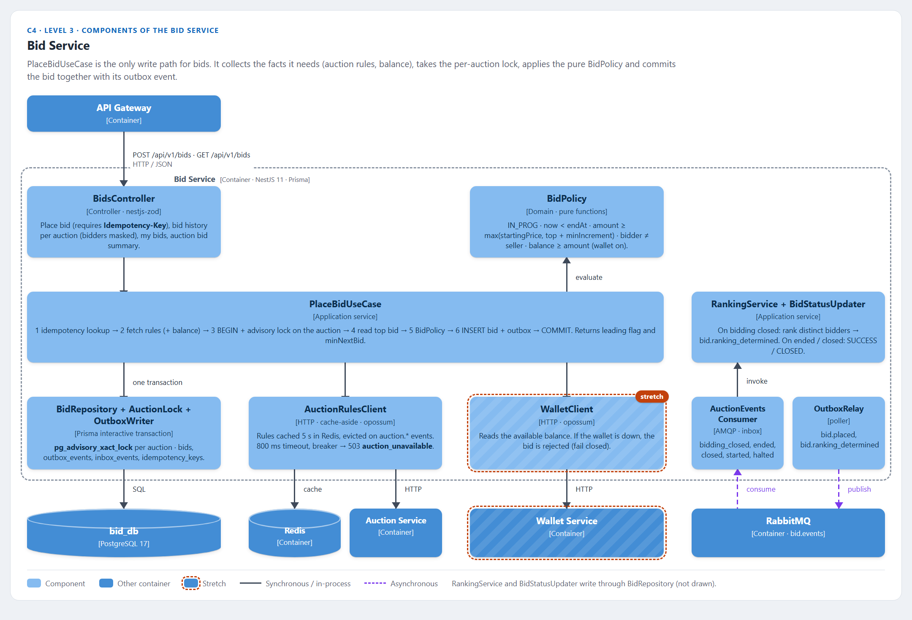
PlaceBidUseCase is the only write path.Placing a bid
Bidding is the hot path, and it is the part v1 got most wrong. In v2 one use case handles every bid. It gathers the facts, takes a lock, runs a pure policy, and commits the bid and its event together.
- Gatewayrate limit, verify the JWT, check the role
- Idempotency + rulesreplay a known key; read the rules through a 5 s cache
- Lock + policyone lock per auction; rules checked against database time
- Commitbid, outbox row and idempotency record in one transaction
- Fan-outoutbid notice, price projection, live push
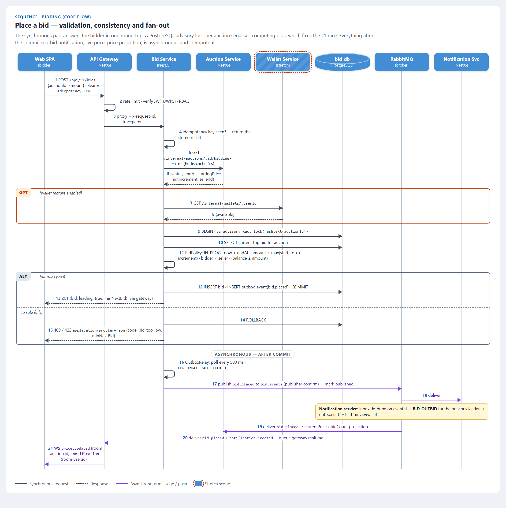
Serialising competing bids
v1 read the current top bid and then inserted the new one, so two requests could read the same top bid and
both succeed. v2 opens a transaction and takes a PostgreSQL advisory lock keyed on the auction. Competing
bids on the same auction wait for microseconds, and bids on other auctions are not affected. The time rule
uses the database's now() inside the lock, so the server clock is the only clock that counts.
BEGIN;
-- one lock per auction, released automatically at COMMIT or ROLLBACK
SELECT pg_advisory_xact_lock(hashtext(:auction_id));
-- read the current top bid while holding the lock
SELECT amount FROM bids
WHERE auction_id = :auction_id
ORDER BY amount DESC LIMIT 1;
-- BidPolicy (pure TypeScript): status = IN_PROG, now() < end_at,
-- amount >= max(starting_price, top + min_increment), bidder <> seller
INSERT INTO bids (...) VALUES (...);
INSERT INTO outbox_events (...) VALUES ('bid.placed', ...);
INSERT INTO idempotency_keys (...) VALUES (...);
COMMIT;
Each click in the SPA sends a fresh Idempotency-Key, so a retried request returns the original
result instead of creating a second bid. When a rule fails, the transaction rolls back and the API returns a
409 with a stable error code and the minimum next bid, which lets the UI offer a one-click "bid minimum".
If the auction service is down and no cached rules are available, the bid is refused with a 503 within a
second. Bidding fails closed rather than guessing.
The acceptance test for all this is blunt. k6 fires 200 concurrent bids at one auction, and a SQL assertion checks that no accepted bid breaks the increment rule and that the final price equals the highest accepted bid.
Auctions that run themselves
In v1, nothing moved an auction at its start or end time, and no winner was ever chosen. v2 makes time a
server concern. The auction's lifecycle is an explicit state machine, implemented as a pure function from
(state, command) to (newState, effects), with a unit test for every transition.
An invalid transition returns a 409.
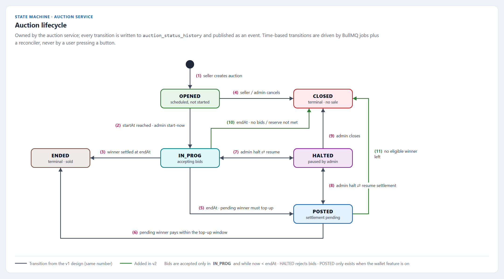
IN_PROG and only before endAt.
When a seller creates or edits an auction, the service schedules two BullMQ delayed jobs,
auction:{id}:start and auction:{id}:end. Their ids are deterministic, so an edit
replaces them safely. At endAt, the auction service closes bidding and publishes an event. The
bid service ranks the distinct bidders (ties go to the earliest bid) and publishes the ranking, and the
auction service decides the outcome:
- no bids, or the reserve price not met →
CLOSED, and the lot is revoked; - otherwise →
ENDED, the top-ranked bidder wins and the lot is sold; - with the wallet feature on → the settlement saga described below.
Timers alone are not enough. If Redis is flushed or a worker crashes, a job can be lost, so a reconciler runs every 60 seconds. It finds auctions that should have started or closed and replays the transition through the same code path, which makes the lifecycle self-healing.
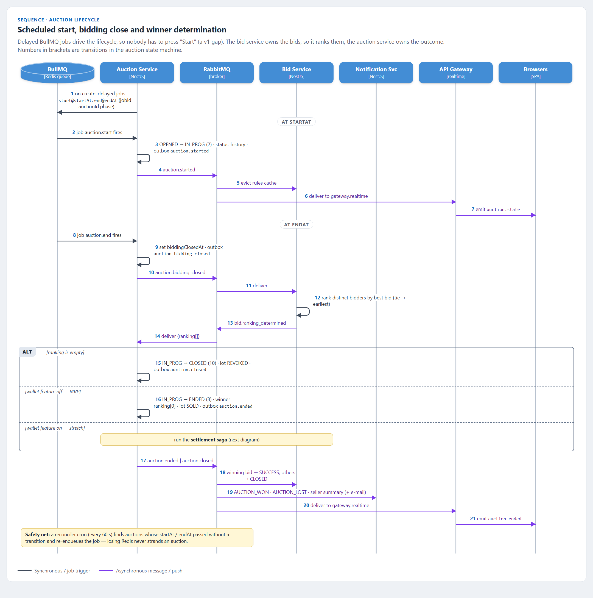
Lots, bids and accounts
The other three state machines also come from the v1 design, which v1 never enforced. A bid's
"leading" or "outbid" status is derived from the ranking, so outbidding someone never updates existing
rows. When an account leaves ACTIVE, every session it holds is revoked.
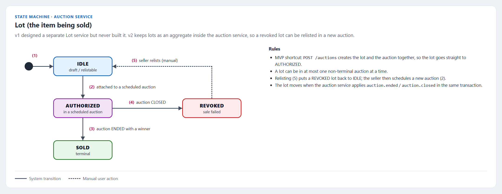
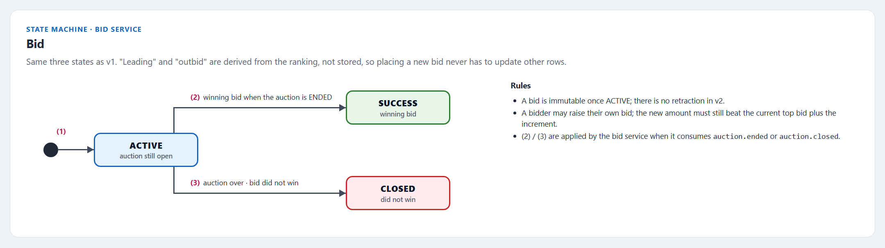
ACTIVE forever.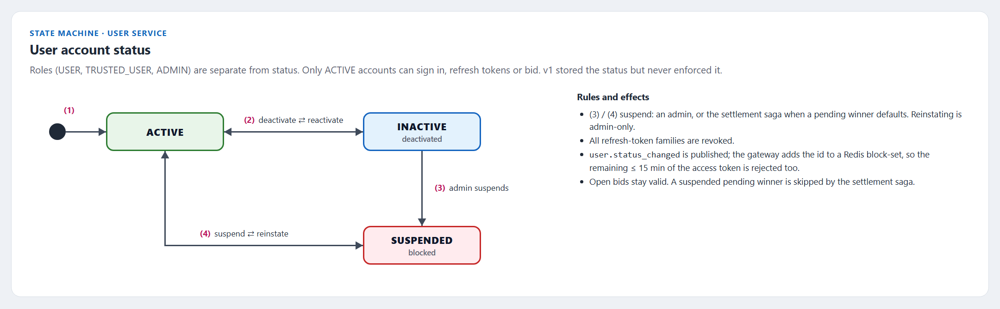
Settlement (stretch scope)
With the wallet feature on, the outcome becomes a saga taken straight from v1's "winning an auction" flow
chart. The service tries to capture the winning amount from the winner's wallet. If the balance is short,
the auction moves to POSTED with a top-up deadline and a payment reminder. If the deadline
passes, the defaulter is suspended and the next-ranked bidder becomes the pending winner. The saga's state
lives on the auction row, so it survives restarts, and the whole feature sits behind a flag so it cannot
put the core demo at risk.
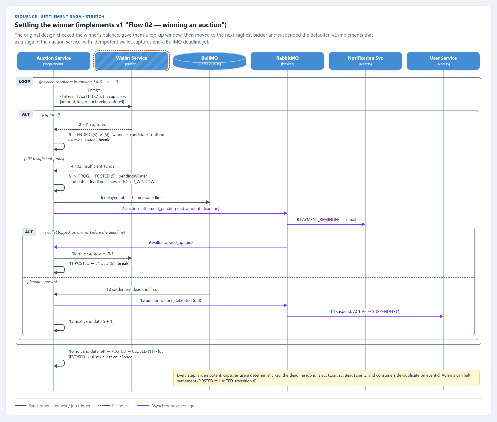
Events and data
Services talk through RabbitMQ: one topic exchange per producing service, one durable queue per consumer, and about 20 event types. A failed message goes to a retry queue with a 5-second delay, up to five attempts, and then to a dead-letter queue, so a poison message never blocks the others.
Outbox and inbox
A service never publishes directly from a request. The use case writes its business rows and an
outbox_events row in the same transaction. A relay polls every 500 ms with
FOR UPDATE SKIP LOCKED, publishes with publisher confirms and marks the row as sent, which is
safe with several replicas. On the consuming side, the handler first inserts the event id into an
inbox_events table. If that insert is a duplicate, the message is acknowledged and skipped.
Together these give at-least-once delivery with effectively-once handling. v1 already had simpler
versions of both patterns. v2 hardens them and shares one tested library across every service.
{
"eventId": "0192c7f0-6a1e-7c3e-9a51-2f0d4e1b8a77",
"type": "bid.placed",
"version": 1,
"occurredAt": "2026-10-21T09:12:31.204Z",
"producer": "bid-service",
"correlationId": "req_7f3c…",
"traceparent": "00-4bf92f…-00f067aa0ba902b7-01",
"data": { /* type-specific payload, validated with zod */ }
}
Ordering across messages is not guaranteed, so handlers tolerate reordering. The price projection only
ever moves upward, and a state event is applied only if its transition is valid from the current state.
The traceparent in the envelope carries the trace across the broker, so a single bid appears
in Jaeger as one trace from the gateway through the bid service, RabbitMQ and the notification service
and back to the browser push.
When something breaks
| failure | what users see | recovery |
|---|---|---|
| Notification service down | Bidding, browsing and the lifecycle carry on; notifications are delayed | Queue holds messages until it restarts |
| RabbitMQ down | Bids are still accepted; live updates pause with a banner | The outbox relays the backlog when the broker returns |
| Redis down | Rate limiting fails open (logged); scheduled jobs pause | The reconciler catches overdue transitions |
| Auction service down | Auction pages and bids return 503 within a second; other pages work | Circuit breaker half-opens after 15–30 s |
| User service down | New logins fail; existing sessions work for up to 15 minutes | Cached signing keys keep tokens verifiable |
Data model
One PostgreSQL server hosts five databases, and each service connects with a role that can reach only its
own. There are no cross-database foreign keys: services reference each other by id and keep their copies
in sync through events. Money is stored as numeric(12,2) and sent as a string
("125.00"), times are UTC timestamptz, and ids are time-ordered UUID v7. Schemas
change through reviewed Prisma migrations instead of v1's ddl-auto: update.
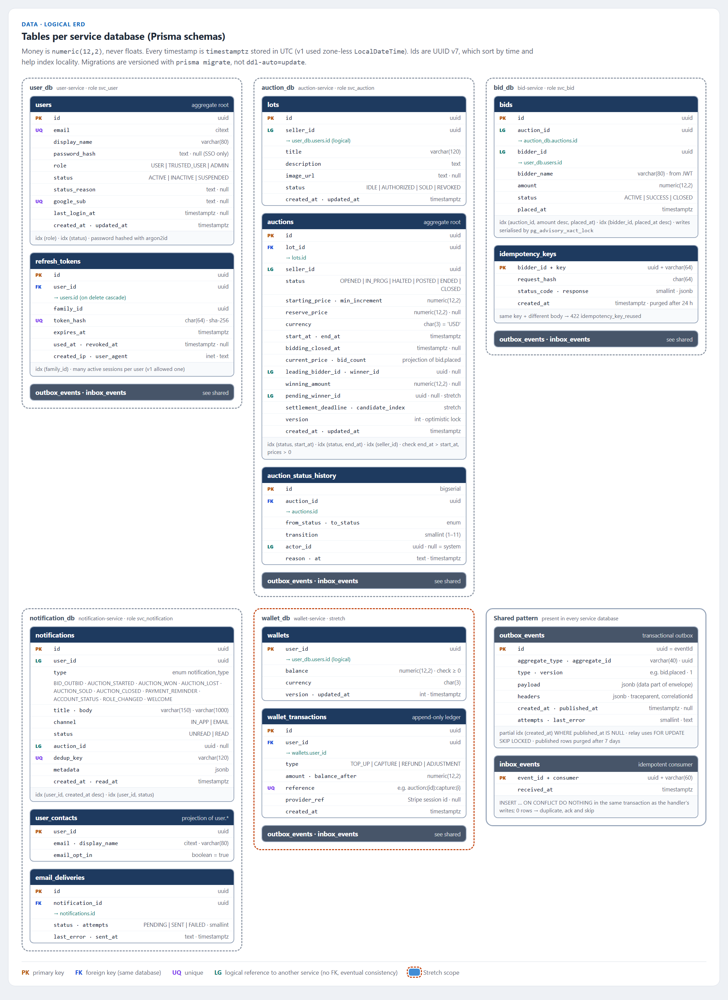
Security
Most of v1's high-severity findings were security problems, and most of them came down to trusting the wrong thing: the UI, the request body, or a secret that every service shared. v2 takes identity only from verified tokens and denies anything that is not explicitly allowed.
| v1 finding | v2 fix |
|---|---|
| Any user could create auctions: the route rule did not match the endpoint | One declarative route table generates the proxy, the role checks and the rate limits, so they cannot drift apart. Services check roles too. |
| Seller id taken from the request body | Identity comes only from the token's sub; request schemas reject unknown fields |
| One HS512 secret copied to all five services | RS256: only the user service holds the private key, and the others verify through a JWKS endpoint |
| Access and refresh tokens in the OAuth redirect URL | The callback sets an HttpOnly refresh cookie only; no token ever appears in a URL |
Stored XSS through innerHTML | React escaping, dangerouslySetInnerHTML banned by lint, and a strict CSP |
| Login revealed whether an e-mail was registered; suspended users could still log in | One generic error, a dummy hash for unknown e-mails, and account status enforced on login, refresh and bidding |
| Users logged out silently after 15 minutes | Access token in memory, rotating refresh cookie, and a single-flight silent refresh |
| Hardcoded admin credentials in the source | Admin seeded from environment variables; gitleaks in CI |
Sessions
Passwords are hashed with argon2id. Access tokens last 15 minutes and are kept in memory only. The refresh token is a random 256-bit value stored as a SHA-256 hash, sent in an HttpOnly, SameSite=Strict cookie scoped to the auth routes, and rotated on every use. If an already-rotated token is ever presented again, the whole session family is revoked, which is the standard defence against a stolen refresh token.
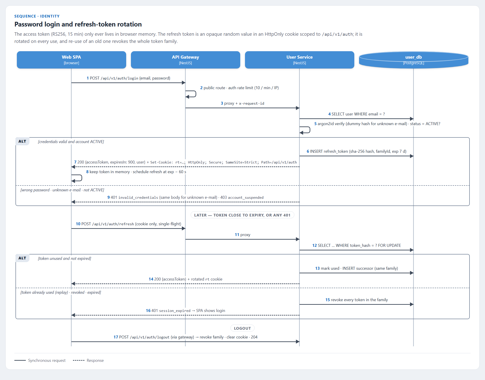
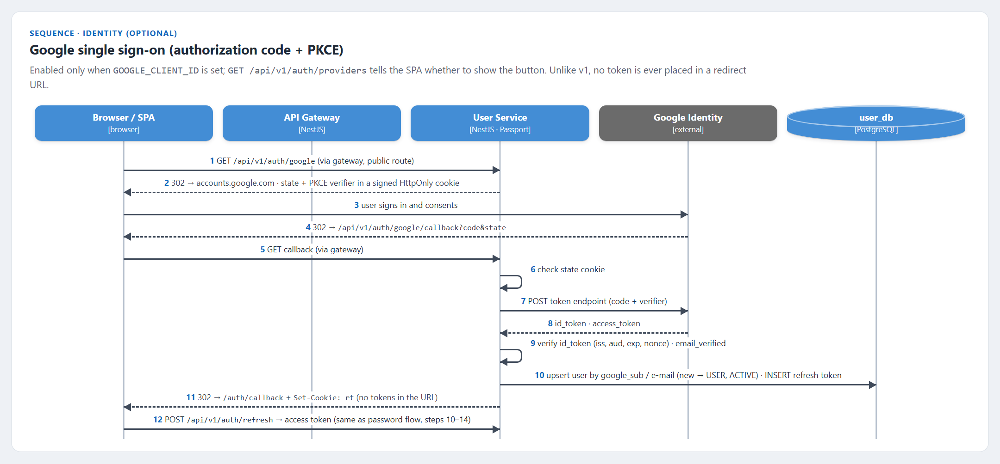
Authorisation in four layers
- Gateway: the route table declares authentication and roles for every path. Unknown paths and anything under
/internalreturn 404. - Service: every controller verifies the JWT and its roles itself, so services never rely on gateway headers alone.
- Domain: ownership checks ("is this your auction?") live inside the application services.
- Tests: a generated test calls every endpoint as anonymous, USER, TRUSTED_USER, ADMIN and owner, and asserts the expected status.
Role and status changes take effect within seconds rather than at the next login. When the user service publishes a role change, the gateway marks that user's older tokens as stale, and the SPA silently fetches a new one. When a user is suspended, the gateway blocks them and closes their open WebSockets.
Running it for free
Docker Compose is the primary runtime, and the same images run in Compose, Kubernetes and AWS. A fresh clone starts with one command and no configuration. A one-shot container generates the JWT signing keys, others run migrations and seed demo users and auctions, and healthchecks order the start-up.
./deploy/scripts/demo.sh up # app :8080 · mail :8025 · RabbitMQ :15672
./deploy/scripts/demo.sh up --obs # + Grafana, Prometheus, Jaeger
./deploy/scripts/demo.sh up --wallet # + wallet service and settlement (stretch)
./deploy/scripts/demo.sh reset # wipe volumes and reseed
./deploy/scripts/demo.sh downEvery container has a memory limit, and every Node service caps its heap so V8 stays inside that limit.
| container | limit | typical |
|---|---|---|
| gateway | 192 MB | 110 MB |
| user / auction / bid / notification (each) | 160 MB | 85–120 MB |
| PostgreSQL | 192 MB | 90 MB |
| RabbitMQ | 256 MB | 130 MB |
| Redis, Nginx, Mailpit | 128 MB | 33 MB |
| core total | ≈ 1.5 GB | ≈ 1.0–1.1 GB |
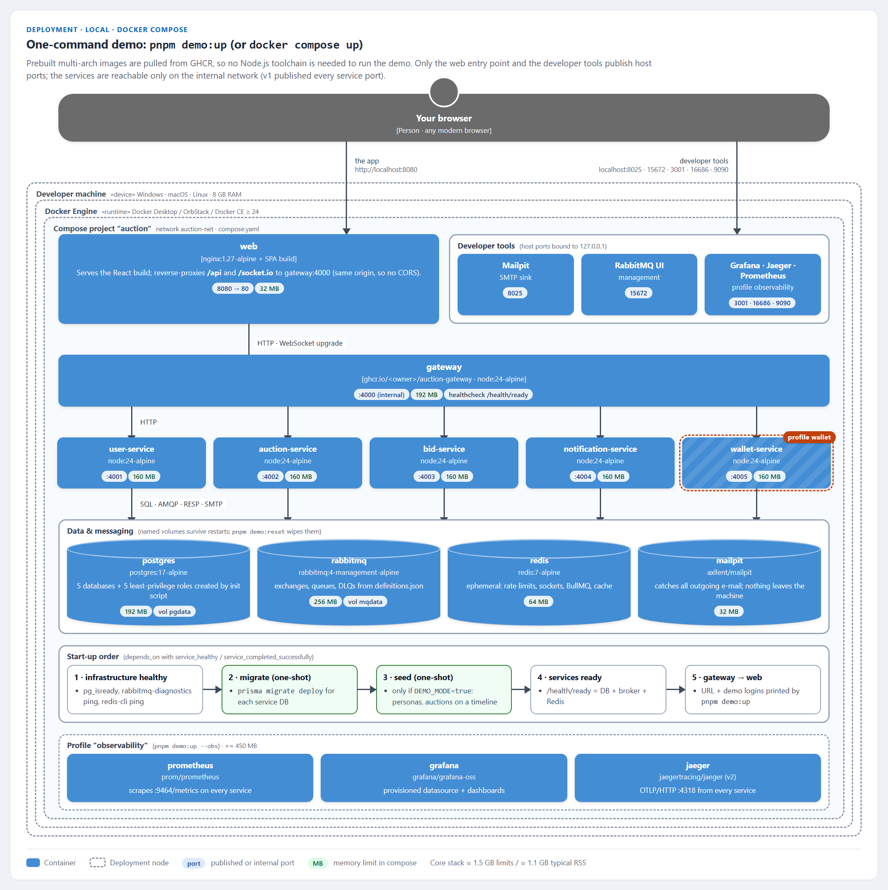
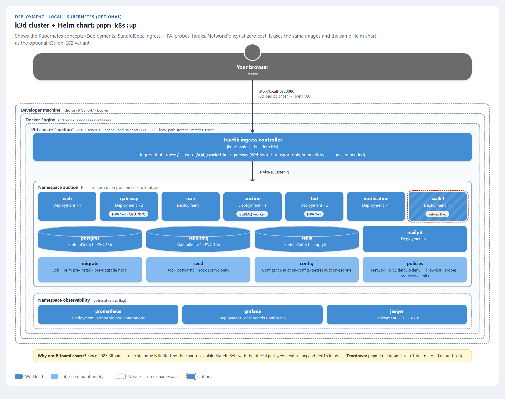
AWS on the free tier
The public demo is a CloudFront distribution in front of a private S3 bucket for the SPA and a single
t4g.small EC2 instance running the same Compose stack. The instance accepts traffic only from CloudFront's
origin-facing IP ranges, has no SSH port (operators use SSM Session Manager), and reads its secrets from
SSM Parameter Store at deploy time. Terraform creates everything with pnpm aws:up and removes
it with pnpm aws:down, and a US$1 budget alarm watches the bill.
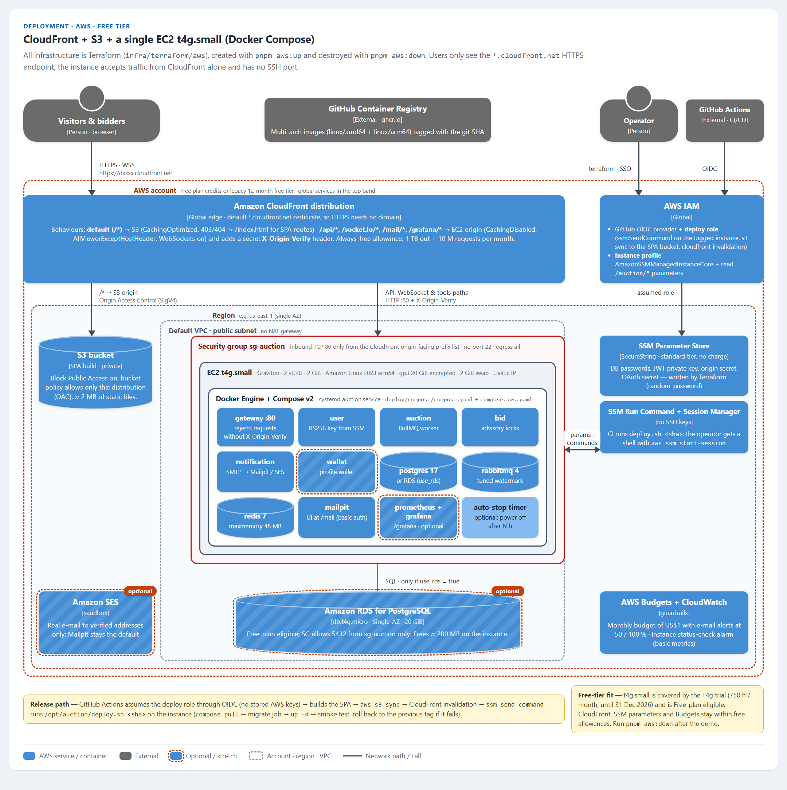
CI/CD
Pull requests run lint, type checks, unit and integration tests, contract checks and security scans,
building only the packages a change affects. A merge to main builds multi-architecture
images (amd64 and arm64 for Graviton), scans them with Trivy, attaches an SBOM, pushes them to GHCR tagged
by git SHA, and runs the full demo storyline in Playwright against the new images. Deploying to AWS is a
manual workflow that authenticates through GitHub OIDC, so no cloud keys are stored anywhere, and it rolls
back automatically if the smoke test fails. A nightly job adds load tests and chaos scripts.
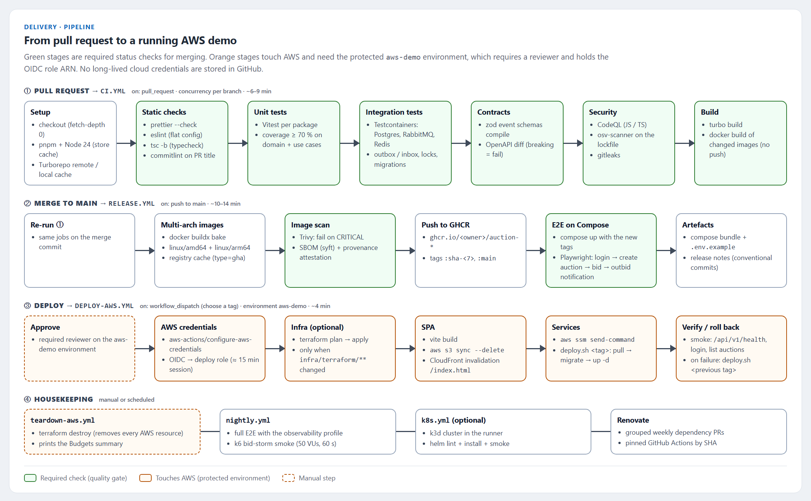
Results
The result is a complete design that the build can follow without re-deciding the architecture. It consists of a 26-section architecture document, 20 diagrams drawn in plain HTML and CSS (rendered to the PNGs on this page), 16 architecture decision records, and a backlog that breaks the work into tasks with acceptance criteria, priorities and dependencies.
- 59functional requirements, each traced to a service and an epic
- 16architecture decision records
- 167backlog tasks across 17 epics and 6 milestones
Every requirement is either carried over from v1, taken from a v1 design that was never built, or new, and every requirement is prioritised. The 110 "Must" tasks (about 131 person-days) make up a demo-ready milestone. Stretch work such as the wallet and Kubernetes only starts once that milestone is reached.
Targets the build is held to
| quality | target | verified by |
|---|---|---|
| Deployability | Fresh clone to working demo with one command in ≤ 10 min, no manual config | Timed E2E run in the release workflow |
| Correctness under concurrency | 200 concurrent bids on one auction: 0 accepted bids breaking the increment rule | k6 plus a SQL assertion, nightly |
| Performance | Placing a bid p95 ≤ 300 ms at 50 concurrent users | k6 bid-storm scenario |
| Real-time latency | Other viewers see a new price within 1 s (p95) | Playwright timing and a push-lag histogram |
| Resilience | Broker outage loses no events; notification outage leaves bidding unaffected | Chaos scripts, nightly |
| Security | 0 secrets in the repo, 0 critical image vulnerabilities, every endpoint covered by an authorisation test | gitleaks, Trivy and the matrix test in CI |
| Cost | US$0 locally; AWS inside free-tier allowances with a US$1 alarm | AWS Budgets and the teardown workflow |
The acceptance test is a ten-step demo storyline that doubles as the Playwright end-to-end suite. Two bidders outbid each other with prices updating live in both browsers. A seller's auction starts by itself. An admin halts and resumes it, then ends it early, and the winner, losers and seller each receive the right notification. The notification service is then stopped mid-demo, bidding carries on, and the missed notifications arrive when it comes back. The last step shows that bid's trace in Jaeger, crossing every service involved.
What I learned
- Authorisation in the UI is not authorisation. Hiding v1's "create" button did nothing, because the gateway rule and the real endpoint had drifted apart. Generating every rule from one table, and testing every endpoint against every role, removes that drift instead of hoping to catch it.
- A check followed by a write is a race unless something serialises it. The fix did not need new infrastructure. One advisory lock in the right transaction was enough at this scale, and it was the smallest change that was provably correct.
- Time is a feature. Anything that must happen "at the end time" needs a scheduler, a reconciler for when the scheduler misses, and a single authoritative clock.
- Cost constraints shape an architecture as much as patterns do. The move to Node was decided as much by memory per service as by language, and it is what makes the free-tier deployment possible at all.
- Design diagrams that never get built are debt. v1's state diagrams were a good specification that nobody implemented. Treating them as requirements gave v2 most of its domain logic.
- Next time, I would build the walking skeleton before the features. Distributed bugs are hard to find without tracing, so the v2 plan puts tracing, CI and one event flowing end to end into the very first milestone.